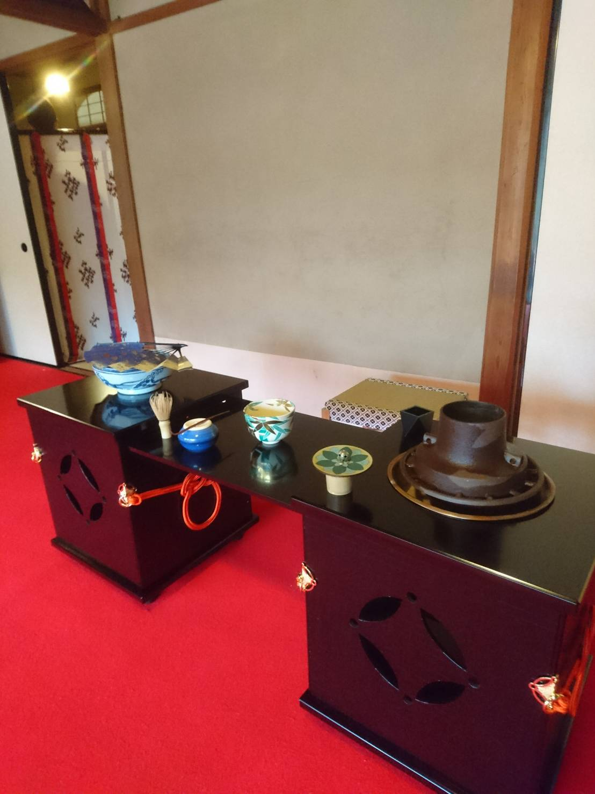

2019年4月春茶会
皆様、本日は京都大学医学部茶道部春茶会にいらっしゃいまして、またQRコードにアクセスいただきましてありがとうございます。
このページではQRコードを中心に、春茶会について写真を交えつつ説明させていただきます。
QRコードについて
QRコードはQuick Responseに由来し1994年に日本の自動車部品メーカーのDENSOが開発したものでございます。左上、右上、左下の三スミにある模様でQRコードは認識され、八マスの点から成る模様一つが英数記号一文字に対応することで記録されている情報が読み取られます。当初は会社内のは自動車部品工場や配送センターなどでの使用のために作られましたが、DENSOがQRコードの特許を保有しているもののライセンス使用料を取らなかったことや、生産から出荷までの過程を一目でわかる利便性により圧倒的に広まりました。
本茶会では、全体テーマが「点」であることから、ひとつひとつはただの点でも、集まると大きな意味を持つものの例の一つとして席札に使わせていただきました。
星座早見盤について
本茶会の席札は星座早見盤をあしらったものにいたしました。星座は今回の春茶会のテーマである「点」の集合であるだけでなく、長らく文化の往来の中心となっていた航海に必須のものでもあります。航海は物の行き来にはじまり「茶の本」を代表とする文化的な交流にいたるまで、世界に大きな影響を与えました。
星座のデザインは天球図と呼ばれる、中世にかかれた星座表を参考にいたしました。そのなかに1つだけ色が異なり番号がかかれた星がございますが、この星はうしかい座のアークトゥルスで春で一番明るい星でございます。ぜひ夜空に探してみてください。
席札の表紙は安土城の内装を参考に、南蛮調の雲を金色の屏風をモチーフとした背景に描かせていただきました。裏表紙には漢点字をあしらわせていただきました。これはその名の通り漢字を点字で表したもので、「永楽通宝」と書かれています。永楽通宝は十五世紀初めに中国で作られた通貨ですが、信長公が旗印として用いたことが知られています。
「点」という壮大なテーマから何とか席札を形にすることができました。このサイトと共に、お茶会中だけでなく、お茶会の終わった後も手にとって楽しんでいただけると幸いでございます。
点心席について
点心席は当茶道部初の試みで、テーマは特に設けておりません。お軸は「仙厓義梵筆 博多にわか祭り画賛」と呼ばれるもので、博多にわか祭りとは、博多に伝わる話芸の伝統芸喜劇のことです。このお軸には「君が代は千代にややの松ばやし まへの博多の祝う初春」という言葉が書かれています。松ばやしとは「松をはやす」という意味で、はやすという言葉が、分割する、切ることをいう祝いの言葉で「殖やす」に通じ、その年の繁栄を祈って山から神の依代である松を伐って家に迎い入れるのを「松ばやし」と呼びました。その後中世になり、はやしが「囃子」と解釈されるようになり、このお軸のように芸能として松ばやしが成立したと言われております。また、仙厓義梵は臨済宗の僧侶で洒脱な禅画で知られる大変高尚な方でございます。床飾りはデルフト花瓶で南蛮好きであった信長にちなみ、オランダで求めました。また、色紙は当茶道部員が作成したものでございます。空に浮かぶ星座をモチーフにいたしました。
濃茶席について
濃茶席では、茶道を通して全国統一の礎を築いた千利休居士と織田信長公に焦点をあててお席をご用意いたしました。信長公は、外国の文化に強く関心を持っており、南蛮貿易の先駆者でもありました。そのことから、主茶碗は大徳寺呉器でございます。高台内の点には、中国にある臨済塔の砂が埋め込まれております。風呂先屏風は「船」、水指はポルトガル製のものを取り合わせました。お水は本能寺の変前日の茶会にも用いられた柳の水といたしました。
花入には3Dプリンタを用い、信長公が最後に築いた安土城の天主台に見立てました。花は北野大茶会の折に、利休居士が手植えしたと伝わる散椿といたしました。炉縁は大徳寺金毛閣の古材、釜は霰釜でございます。お香は伽羅といたしました。本来なら練香をご用意するところを、今席ではあえて信長公が好んだ香木をご用意いたしました。
床の間から説明いたします。お軸は、天下統一を夢見る若き信長公に重ね、「池塘春草生」といたしました。鵬雲斎大宗匠ご染筆でございます。本茶会の意図をくみ取り、特別にご染筆いただきました。香合は中啓でございます。茶道は当時より身分を問わず親しまれておりました。中啓は扇のひとつで、宮中で儀礼の具として用いられていたものでございます。蓋置は長年、京の都を守ってきた四神といたしました。
薄茶席について

薄茶席のテーマは「岡倉天心」といたしました。岡倉天心は、幕末から明治にかけて日本文化の本質を問い続けた思想家で、「アジアは一つ」という言葉はご存知の方も多いかと思います。主茶碗は「竹」、二碗目は「無一物」で、混迷の時代に日本文化を愛し続けた天心の真っ直ぐな生き様にちなんだものでございます。
軸は相国寺養源院の平塚景堂老師ご染筆の「勘破了也」でございます。また、花入の船に挿された花は、ハナミズキと、春蘭でございます。床飾りは1919年出版の岡倉天心の著書「The Book of Tea, 茶の本」といたしました。
本日のお席の様子
随時追加していきます！
新歓情報などを流します♪ Follow us! instagramはこちら！ @kyotomedteaさんのツイート